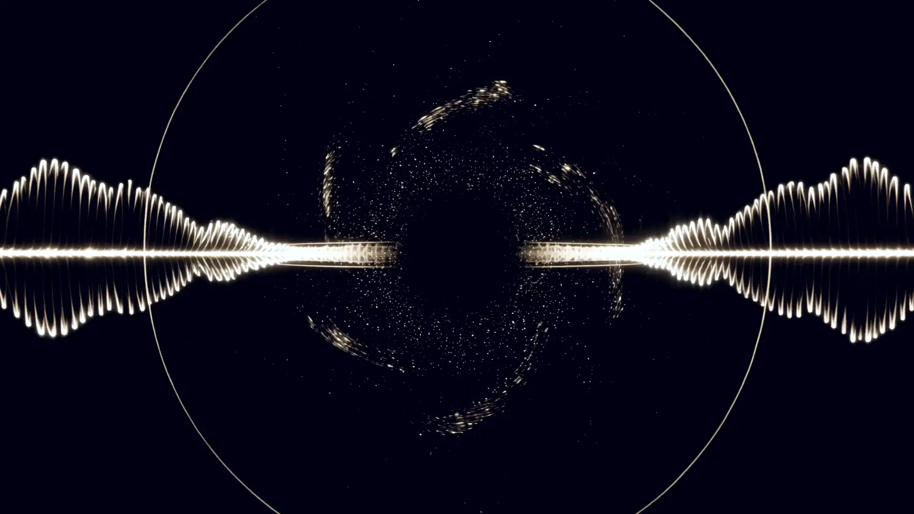
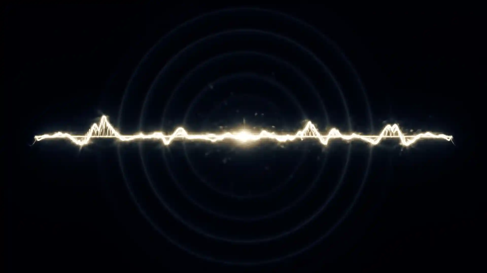
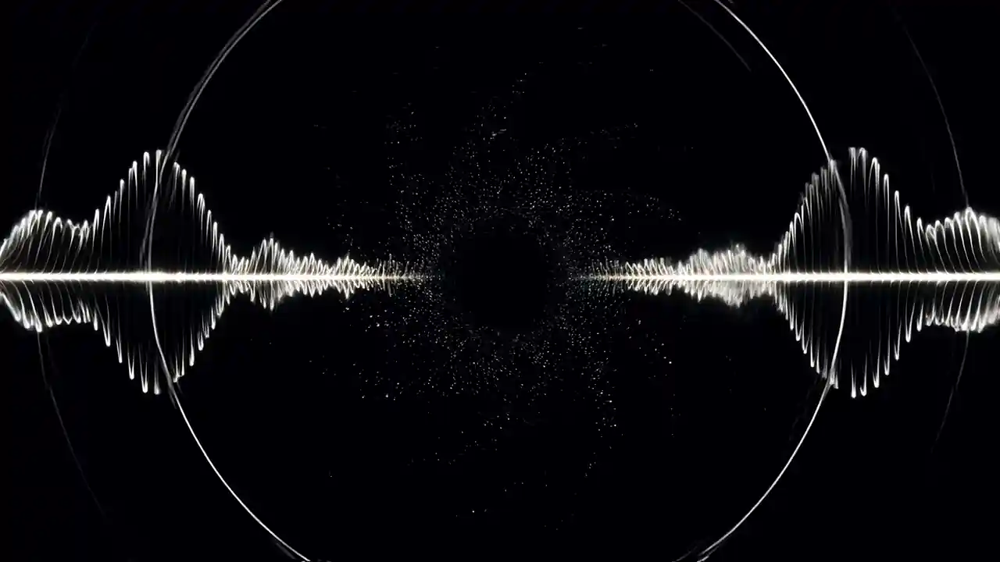
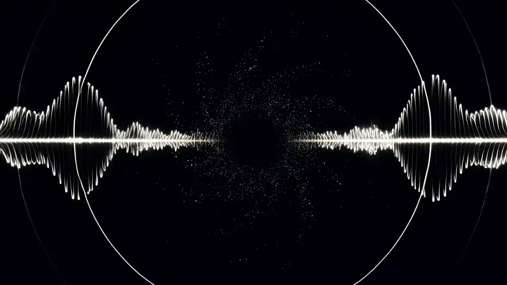

A — The tool
Solfai
Sheet music in. Your key, your part, your starting pitch — out.
A — The tool
Sheet music in. Your key, your part, your starting pitch — out.
B — Origin
Varsity Choir. Competitions. And a habit of taking an idea and actually shipping it as working software.
C — The gap
Between what a page of notation says and how fast a singer can turn it into something they can actually sing — with a rehearsal deadline and nothing to check pitches against.
D — What you get
Your key. Your part. Your starting pitch. All in movable-do solfège.
E — Two ways in
MusicXML gives exact data. A photo or PDF gets read, then cross-checked.
Solfai reads sheet music two ways. One path is finished and exact. The other is the harder problem, and worth being straight about.
Upload a MusicXML file — the format notation software like MuseScore exports — and Solfai gets exact data: every note, every duration, every dynamic marking. No guessing involved. These uploads already return complete results.
Optical music recognition extracts the notes, then cross-checks that against an AI model's independent read of the same page — rather than trusting either source blindly. Genuinely useful, measurably improving, not perfect yet.




Choir has been a real part of my life for four years. So has building things. Solfai came out of putting those together — the tool I wished existed, standing in rehearsal without a piano and not enough time.
Upload a score